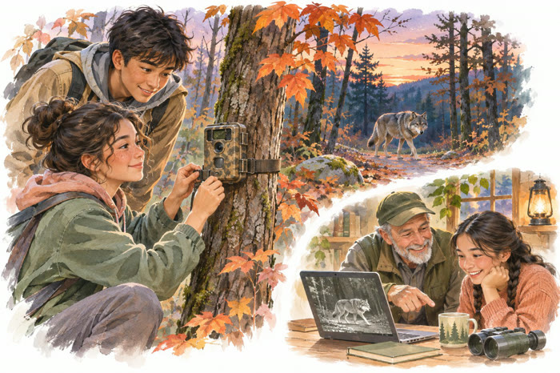

Listen to the text
Speed:

My grandfather is a forester. He has worked in the same forest for forty years, and he says that he has seen a wolf only three times. "Wild animals are clever," he explains. "They hear you long before you see them." Last autumn he got a present from a nature organisation: three camera traps. A camera trap is a small box that is tied to a tree. It has a sensor, and it takes a photo or a short video every time something warm moves in front of it. It works day and night and doesn't disturb anybody. Grandfather asked me to help. We chose three places: a path near the stream, an old oak with a hollow and a clearing where wild pears grow. Then we waited for a month. In November we collected the memory cards and sat down at the kitchen table. I expected a few hares. We got a whole secret film. Camera one, the path. A fox trotted past every night at almost the same time, like a postman. A family of wild boars came to drink: a huge mother and six striped piglets that pushed each other into the water. One night a badger stopped, looked straight into the camera and sniffed it for a long time. Camera two, the oak. An owl lived in the hollow. We saw it leave at sunset and return at dawn with a mouse. A pine marten climbed up the trunk as easily as a squirrel. Camera three, the clearing. Roe deer came for the pears every evening. And then, on the nineteenth night, at 3.14 a.m., a large grey animal walked slowly across the picture. It stopped, raised its head and looked back. A wolf. Then a second one. Then four more. Grandfather watched the video five times without a word. "Forty years," he said at last. "And they have been here all the time." We sent the videos to the scientists. They told us that the pack was new for this area and that it was a sign of a healthy forest: where there are wolves, there is enough food and silence. Now I look at the forest in a different way. It only seems empty. In fact it is full of creatures that see us, hear us and politely wait until we go home.
Tap any sentence to hear it again.
Сподобалось? На сайті ще більше матеріалів для вчителів!
Reader, презентації, ігри, діагностичні та контрольні роботи до підручників 1-11 класів.
Перейти на сайт materials.allaenglish.com